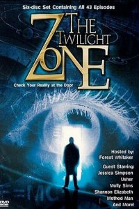

Операция «Фортуна»: Искусство побеждать
Операция «Фортуна»: Искусство побеждать Мой ужасный сосед
Мой ужасный сосед Черный ящик
Черный ящик Аферисты
Аферисты Крушение
Крушение Вавилон
Вавилон Чёрная Пантера: Ваканда навеки
Чёрная Пантера: Ваканда навеки



название
Сумеречная зона
премьера
время
20 мин
просмотр
в главных ролях
Про сериал
Американский сериал «Сумеречная зона» представляет собой множество не связанных между собой эпизодов, выполненных в жанре фантастики, ужаса, триллера и драмы, развязка которых часто оказывается весьма неожиданной и шокирующей. Сюжет каждого отдельного эпизода увлекает, пугает, интригует и удивляет зрителя, который продолжает следовать за героями, погружаясь в мир научной фантастики.
С помощью разнообразных историй, поведанных в сериале, зритель знакомится с абстрактными идеями реального мира и воображаемого, а также становится свидетелем сумасшествия некоторых персонажей и пугающих реальных фактов, который большинство людей предпочитают не замечать, но которые страшат и ужасают до чертиков. © ГидОнлайн

Расскажи друзьям
Название
В оригинале
Что еще посмотреть
 Запах мандарина
Запах мандарина Каприз
Каприз Братья из Гримсби
Братья из Гримсби Десятое королевство
Десятое королевство Комментирование этого фильма доступно
Комментирование этого фильма доступно 
7-ая серия халтура, всю серию происходит какая-то непонятная хрень, а в конце – «хотите мы объясним вам, что за хрень происходила? А ну в общем ведь у нас же мистический сериал, вот поэтом всё это и было и ага, да вот и всё» Шикарное объяснение. Просто капец. Спасисибо! Кто додумался до этого, какой гений?
В общем в семье не без урода, потому что почти все остальные серии отличны, хотя ещё парочку бредовых попадается, но для 44-ёх это немного. Хороший сериал, с удовольствием посмотрел!
Очень шикарный сериал, а шестая серия просто отпад. Огромное спасибо создателям и вам – гидонлайн.
32 серия дебильная. Очень все нелогично и недостаточно предпосылок и причин чтобы толпа так озверела. Хрень!
Очень хорошие миниатюры, в роде «А что если бы..»
Очень очень странный сериал.
НО очень сильно затягивает и очень интересный.
Блин какой же очешуительный сериал!! от каждой серии в восторге! 11/10
У меня от первой же серии началась бомбежка чуть пониже спины. Это сериал демонстрирующий идиотскую логику людей и самое страшное то, что есть ублюдки, которые могут так мыслить в реальности. А ещё невероятно бесит и захватывает безысходность в которой находятся главные герои. Ты знаешь что им гемба, но до самого конца переживаешь. И параллельно с этим всем сердцем ненавидишь всех, кто гг мешает. Такое чувство при просмотре, будто ты хочешь, чтоб было не так, но изменить это никак нельзя. И не дай бог в это сумеречную зону попасть, ибо ну его в задницу. Это страшнее всяких звонков. Лучше я буду бегать от непонятной мистической [пип] чем оказаться среди общества напрочь долбанутых людей, которые тебя не понимают и готовы сделать любую дичь, которую они посчитают нужной. Я в детстве подобных страшилок насмотрелся, поэтому это вдвойне страшнее для меня ибо в детстве подобное меня сильно впечатлило и сильно повлияло. люди в стаде – страшнее некуда. сериалу 10/10
Сериал очень интересный и возбуждает воображение. За одним небольшим исключением,- это та серия про женщину и «преследующий её автобус»! С одной стороны идея неплохая и концовка лучше не при думаешь. Сама актриса и её паранойя выглядит настолько жалко, и её подозрительный взгляд на обычных пассажиров людей с дурацким видом, делают её неудачной актрисой с отсутствием всякого таланта! Неожиданные повороты, отличии от первоначального представления, делают картины незабываемым! 9 из 10
С одной стороны идея неплохая и концовка лучше не при думаешь. Сама актриса и её паранойя выглядит настолько жалко, и её подозрительный взгляд на обычных пассажиров людей с дурацким видом, делают её неудачной актрисой с отсутствием всякого таланта! Неожиданные повороты, отличии от первоначального представления, делают картины незабываемым! 9 из 10
Я люблю, что тут почти в каждой серии всем нам известные актеры моего детства, а Форрест вообще милаха Короче ностальгия..В СУМЕРЕЧНОЙ ЗОНЕ…
Короче ностальгия..В СУМЕРЕЧНОЙ ЗОНЕ… 
4 серия самая классная на мой взгляд (=
3 серию можно не смотреть, в ней якобы пытаются показать что расизм плохо, но вот только происходит все наоборот. Я думаю в Америке проблемы с расизмом именно из-за таких вот сериалов, фильмов и т.д. Белые то может и проникнутся состроданием к неграм, а вот у негров будет наоборот, у них появится лишний повод думать что все белые их ненавидят.
Классный сериал.


9 серия напоминает фильм, но там происходит действие в реальности, просто все актеры, а это наказание. Виновной каждый раз вкалывают лекарство, чтобы она все забывала. Тут немного по-другому.
ОООО! А 18 серия, недавно фильм такой вышел)) прям сценка оттуда или наоборот)
Рекомендую.
Сериал «Сумеречная зона» начал выходить ещё в чёрно-белом формате в 60-х годах прошлого века. каждая серия была основана на каком -либо рассказе или повести или романе известных писателей. по типу дайджеста.
этот сериал , конечно. не первый сезон. но достойное продолжение легендарного сериала, который ещё можно найти в хорошем формате в интернете. смотрите, зрелище наинтереснейшее.
Хороший сериал, но надёргано отовсюду, первая серия похожа на роман » Ассоциация» , кое какие серии похожи отдалённо на рассказы С. Кинга….
Сериал то прикольный… Но вот 9 серию я уже видел в совершенно другом сериале, вернее идею, только там никакой виртуальности всё происходило в реале. Короче сбоянили сюжет с данной серии… Жаль не помню название сериала… Вернее, это был типа фильм из нескольких мелких сюжетов, но это темы не меняет… БОЯНЫ ещё никто не отменял!
Сериал твёрдая 7 из 10!!!
Супер сериал!!!совсем не страшный, но держит в напряжении)))каждая серия достаточно поучительная. Мистика, но очень смахивающая на реальность.
Хороший сериал. Все серии с удовольствием смотрела. Каждая серия имеют смысл, после просмотра, которых многие вспомнят об истинных ценностях и сделают переоценку своих взглядов.
Посмотрел несколько серий и понял,что для школьного возраста самое то.Раз книги не в моде,то хоть какой-то смысл в сериальчеике черпнуть да можно.И да 3я серия шикарна :Привет дорогая,я теперь негр!
:Привет дорогая,я теперь негр! 
11,13 серии просто чума.хорошие полнометражки могут получится!
Третья серия самая мощная!
Каждому бы в голову вдолбить последние слова главного героя.
Многие из серий мне понравились. Это необычно, и есть о чем подумать и чему удивиться.
К сожалению популярность сериала упала. В 50-ых годах – это было шикарно. Серлинг, Брэдбери. Экранизация того, что действительно было фантастикой на грани человеческого сознания. Второе возрождение – 80ые года – сериал не потерял своей изюминки, но зритель его воспринял намного холоднее. В нем засветилось много именитых актеров, например – Брюс Уиллис. Затем полнометражный фильм, который скажем так – оказался не «ахти», хотя поклонникам пришелся по душе. Все таки это она – Сумеречная Зона.
Последнее возрождение 2002-го года было с технологической стороны на высоте, да и идеологически не отошло от канона, но что-то пошло не так и на него обратило внимание очень мало человек.
Рекомендую к просмотру.
ЗЫ: из всех серий, запомнилась «Button, button» из второго возрождения.
Смотрел когда-то и эту версию «СЗ» и старую конца 50-х – начала 60-х гг. XX века,и смотрел ту которая шла в 80-е годы. Все интересные. И даже полнометражный фильм «Сумеречная зона» смотрел. Этот жанр по мне. Побольше бы таких сериалов.
супер сериал!!! смотрела его давно и с удовольствием пересматриваю)
Сериал интересный, в чем то очень поучительный и задумчивый… И напомнил немного сериал «Байки из склепа»
И напомнил немного сериал «Байки из склепа»